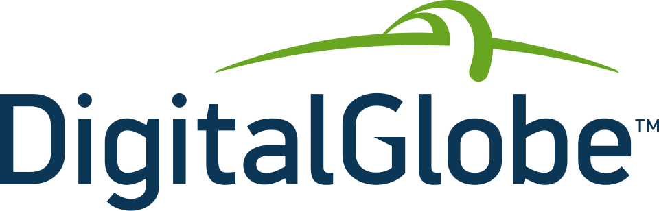

디지털글로브 DigitalGlobe
디지털글로브(DigitalGlobe)는 미국 콜로라도 주에 위치한 관측위성 영상사진 제공 회사이다. 1992년 1월에 설립되었고 2009년 뉴욕거래소에 상장되었다. 본사는 웨스트민스터에 있다.
최종 업데이트

디지털글로브는 어떤 브랜드인가
디지털글로브는 관측위성으로 촬영한 영상사진을 제공하는 미국 회사이다. 본사는 콜로라도 주 웨스트민스터에 있으며 1992년 1월에 설립되었고, 2009년 뉴욕거래소에 상장되었다.
1997년 얼리버드 1호, 2001년 퀵버드, 2007년 월드뷰 1호, 2009년 월드뷰 2호 상업용 관측위성이 발사되었고 해상도는 3 m에서 46cm로 높아졌다. 퀵버드는 2015년 초반까지 디지털글로브의 주된 인공위성이었으며, 2015년 1월 27일 궤도를 이탈했다.
고객은 도시계획 전문가부터 미국 연방 정부까지 다양한 범위에 걸쳐 있다. NASA, 미국 국방부, 구글어스, 구글맵스, TerraServer, 지오아이, 스팟이미지도 고객이다.
디지털글로브는 어떻게 시작되고 성장했나
디지털글로브는 1992년 1월에 설립되었다. 1997년 12월 24일에는 어스 워치 사가 러시아 스보보드니 우주기지에서 Start-1 로켓으로 얼리버드 1호(EarlyBird-1)를 발사했으며, 이는 스보보드니 우주기지에서 발사된 최초의 상업용 인공위성이다.
얼리버드 1호의 흑백 팬크로매틱 카메라 해상도는 3 m, 칼라 다중분광 카메라 해상도는 15 m였다. 이후 2001년 퀵버드, 2007년 월드뷰 1호, 2009년 월드뷰 2호 상업용 관측위성이 발사되었고, 2009년에는 뉴욕거래소에 상장되었다.
디지털글로브의 브랜드 아이덴티티는 무엇인가
해상도 3 m의 얼리버드 1호부터 46cm의 월드뷰 2호까지 상업용 관측위성 영상사진을 제공하며, NASA와 구글어스 등을 고객으로 둔 미국 회사이다.
디지털글로브의 대표 제품과 서비스는 무엇인가
디지털글로브는 관측위성이 촬영한 영상사진을 제공하며, 위성은 얼리버드 1호, 이코노스, 퀵버드, 월드뷰 1호, 월드뷰 2호로 이어진다. 퀵버드(QuickBird)는 2001년 10월 18일 발사되었으며 볼 에어로스페이스(Ball Aerospace)가 제작했고 보잉 델타 2호로 발사되었다.
해상도는 흑백 60 cm, 칼라 2.4 m이다. 이코노스(IKONOS)는 1999년 9월 24일 발사되었고 흑백 0.8 m, 칼라 3.2 m 해상도의 세계 최초 고해상도 상업용 관측위성이다.
월드뷰 1호는 50cm, 월드뷰 2호는 46cm 해상도이다.
디지털글로브는 지금 어떤 상태인가
2009년 뉴욕거래소에 상장되었으며 본사는 웨스트민스터에 있다. 이코노스는 2015년 3월 31일 예상수명의 2배를 넘기고 임무가 종료되었으며, 5,680일간 궤도를 비행하며 지구를 83,131번 돌았다.
퀵버드는 2015년 1월 27일 궤도를 이탈했고 예상수명보다 3배 오래 사용되었다. 고객은 도시계획 전문가부터 미국 연방 정부까지 다양하다.
디지털글로브 로고는 어떻게 변해왔나
자주 묻는 질문
디지털글로브는 어느 나라 브랜드인가요?
디지털글로브는 미국의 기술·전자 브랜드입니다.
디지털글로브는 언제 설립되었나요?
디지털글로브는 1992년 설립되었습니다.
디지털글로브의 브랜드 아이덴티티는 무엇인가요?
해상도 3 m의 얼리버드 1호부터 46cm의 월드뷰 2호까지 상업용 관측위성 영상사진을 제공하며, NASA와 구글어스 등을 고객으로 둔 미국 회사이다.
디지털글로브의 대표 제품은 무엇인가요?
디지털글로브는 관측위성이 촬영한 영상사진을 제공하며, 위성은 얼리버드 1호, 이코노스, 퀵버드, 월드뷰 1호, 월드뷰 2호로 이어진다.
디지털글로브는 현재 어떤 상태인가요?
2009년 뉴욕거래소에 상장되었으며 본사는 웨스트민스터에 있다.
디지털글로브의 본사는 어디에 있나요?
디지털글로브의 본사는 웨스트민스터에 있습니다(위키데이터 기준).
디지털글로브의 공식 웹사이트는 어디인가요?
디지털글로브의 공식 웹사이트는 http://www.digitalglobe.com/ 입니다.
출처와 검증
디지털글로브 관련 참고: 공식 웹사이트 · 위키데이터 Q1224697 · 한국어 위키백과 · 영어 위키백과. 브랜드명은 한글과 원어를 함께 표기하되 데이터에 없는 표기는 만들지 않습니다. 기원 국가·설립연도는 검수된 정의문에서 확인된 값을 우선하고, 없을 때만 공식 웹사이트 URL이 일치하는 위키데이터 개체의 값을 씁니다. 탄생일의 월·일은 위키데이터, 위키백과 정보상자, 본문 가운데 같은 연월로 확인되는 값만 싣고, 출처끼리 다르면 싣지 않습니다. 위키데이터 값은 2026-11-14 기준입니다.